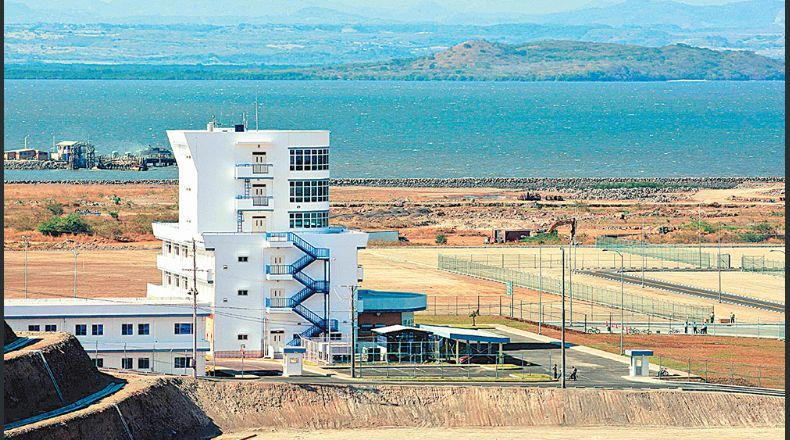

NOTICIAS DE ECONOMIA
CEPA presentó el plan para licitar el puerto de La Unión
Las autoridades de la Comisión Ejecutiva Portuaria Autónoma (CEPA) presentaron ayer a los diputados de la comisión de economía de la Asamblea Legislativa el proceso que seguirán para hacer otro intento de licitar el puerto de La Unión. El presidente de la autónoma, Nelson Vanegas, dijo que por el momento están promoviendo el proceso y harán una consulta virtual con el fin de mejorar las bases y asegurar la participación de inversionistas. Esperan que ambas partes del proceso puedan ser lanzadas en octubre próximo. Según la presentación que hicieron a los diputados, el inversionista puede solicitar la ayuda del Estado para los trabajos de dragado y su mantenimiento, que representa un costo millonario. Dijo que el dragado se haría dependiendo del tipo de desarrollo. Por ejemplo, dijo que si es industria turística o pesquera no lo necesitará, porque la profundidad para esos buques es de 7 metros. Los diputados también volvieron a cuestionar al funcionario sobre el interés de China de participar y tener fines militares. Vanegas dijo que la ley no lo permite y que ellos están desarrollando un proceso transparente. "El puerto no es para ser usado militarmente, quiero aclararlo para que no cree ese tipo de expectativas alrededor. La Constitución de la República establece que solamente podemos hacer procesos con puertos de operación pública", dijo Vanegas en su reunión con los legisladores. El primer intento por licitar el puerto de La Unión fracasó en 2015. Hace unas semanas, el ministro de la Defensa, David Munguía Payés, dijo que El Salvador ha recibido ofertas de la República Popular China para la compra de armamento militar, lo cual no implica una colaboración militar.